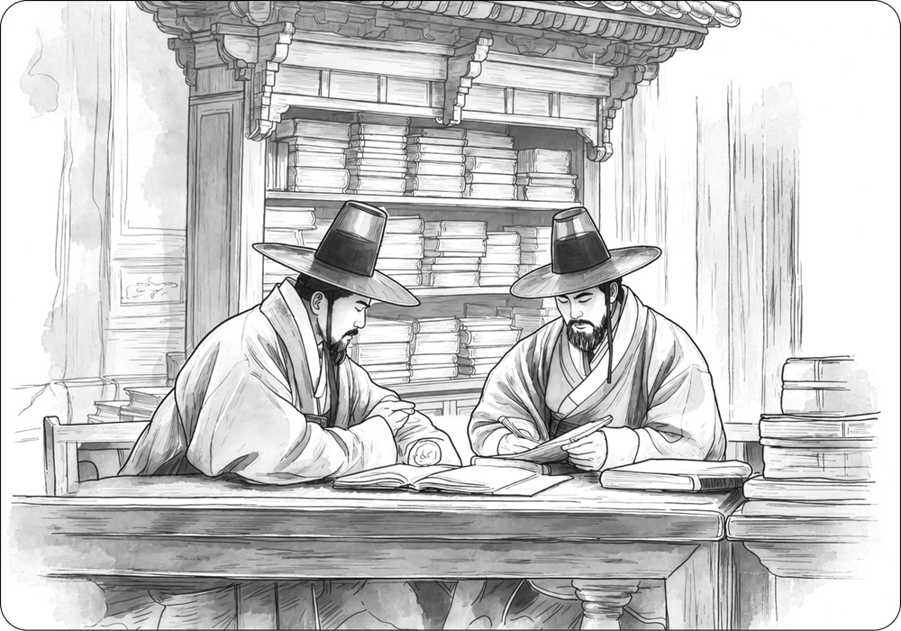

The Establishment of Wanwigak

Wanwigak was a library pavilion established by Yi Ha-gon (1677–1724) in Yangji Village, Chopyeong-myeon, Jincheon-gun. Wanwigak, believed to have been established by 1713, when Yi Ha-gon was 37, was regarded as one of the four great library pavilions of the Joseon dynasty. It was a cultural space where distinguished figures visited to read books and appreciate paintings. It housed a large collection of rare and valuable books and was popularly known as Mangwollu, or “Pavilion of Ten Thousand Volumes.”
The Gyeongju Yi clan first settled in Chopyeong-myeon through Yi Ha-gon’s great-grandfather, Yi Si-bal (1569–1626). After helping suppress the Japanese invasions of Korea and Yi Gwal’s Rebellion, Yi Si-bal was granted land in the Chopyeong area, where his descendants subsequently put down roots.
Yi Ha-gon had an exceptional love of books and rarely put them down. At Wanwigak, he collected not only Confucian classics and historical works, but also fiction, medical texts, and books on divination. In one of his poems, he compared himself to a bookworm:
“This old man, too, has a fondness for books;
I know that in a former life I must have been two bookworms.”
(老夫亦有耽書癖 知是前身兩蠧魚)
The late Joseon scholar Yi Yu-won (1814–1888) traced the origins of Wanwigak to an anecdote concerning Yi Ha-gon’s ancestor, Yi Je-hyeon (1287–1367). While in Yanjing during the Yuan dynasty, Yi Je-hyeon established a reading hall called Mangwondang, or “Hall of Ten Thousand Volumes,” and stocked it with numerous books from ancient and contemporary times. There, he pursued scholarly studies and engaged in discussions with renowned Yuan scholars of the time, including Zhao Mengfu and Yuan Mingshan.
Instead of simply owning books, Yi Ha-gon carefully proofread and critiqued each volume, and whenever he encountered a book he wanted, particularly one not already in his collection, he spared no means or effort to acquire it. This extraordinary devotion ultimately gave rise to the rich and diverse collection of books at Wanwigak.